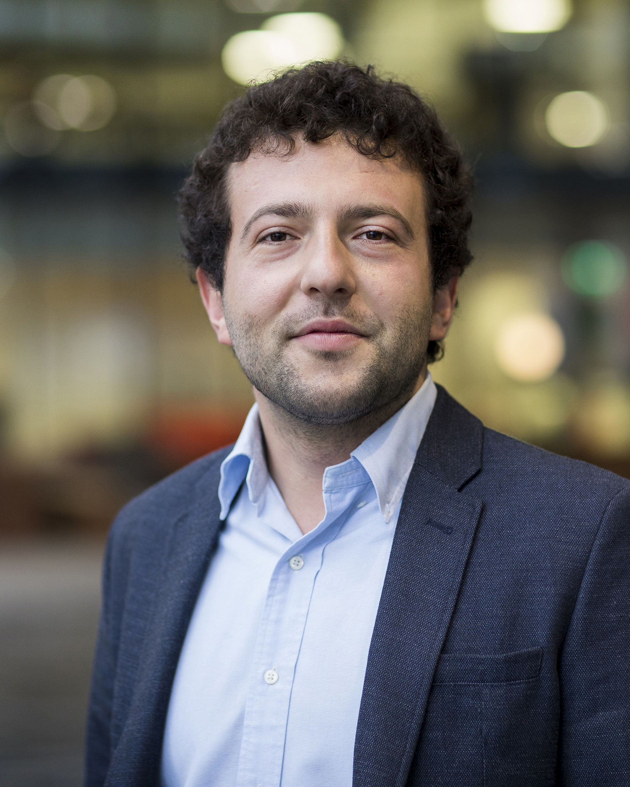

I'm a senior researcher (equivalent to Assistant Professor) in the Information and Communication Theory (ICT) Lab at the Eindhoven University of Technology (TU/e).
Yunus Can Gültekin received the B.Sc. and the M.Sc. degrees from Middle East Technical University, Ankara, Turkey, both in electrical and electronics engineering, in 2013 and 2015, respectively. He obtained his Ph.D. degree in 2020 from TU/e, the Netherlands. Since 2020, he has been a postdoc researcher at TU/e. Since January 2023, he also does part-time consultancy work. He is the recipient of the Best Student Paper award at the 2018 WIC/IEEE Symposium on Information Theory and Signal Processing in the Benelux, and of a 2023 Quantum Delta NL exchange visit grant. His technical expertise and research interests lie in the intersection of information theory and communication theory, with a particular focus on the design of coded modulation and constellation shaping techniques for wireless/optical communications and quantum key distribution. He has experience supervising B.Sc./M.Sc./Ph.D. students.